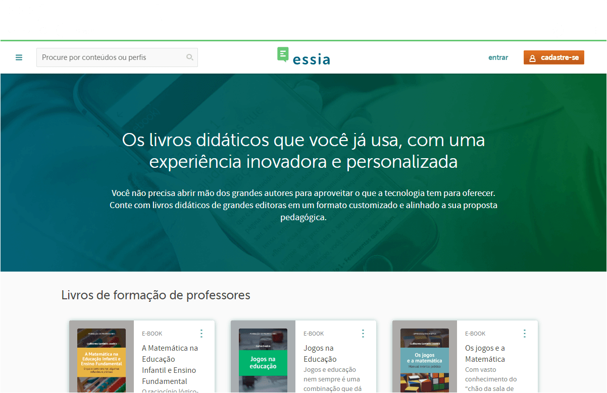
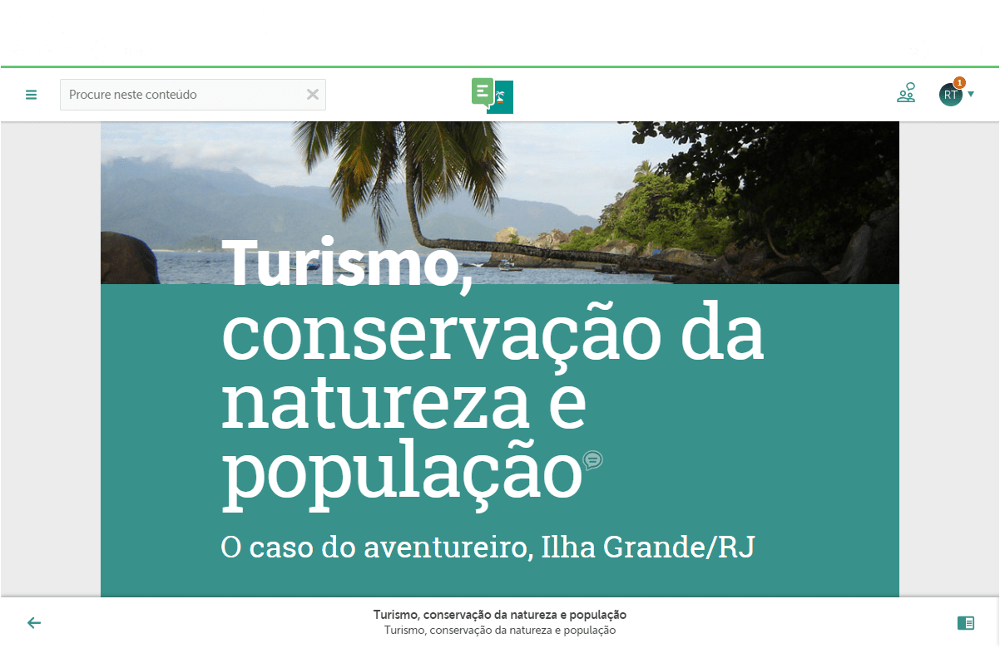
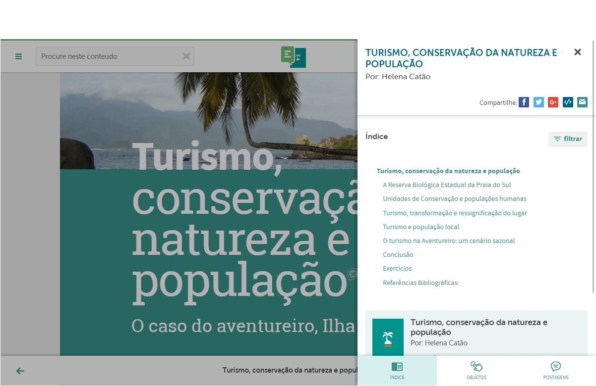
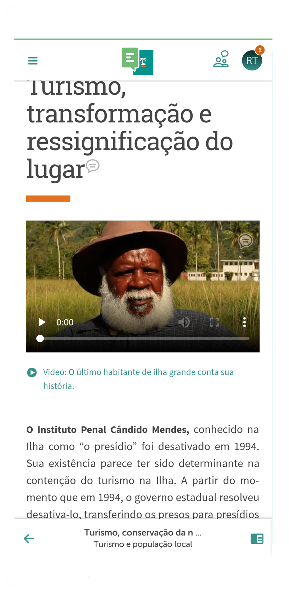
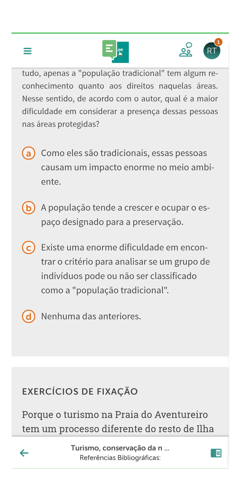

<div class="modal__wrapper">
<div class="modal__scroller">
<div class="modal__header">
<h2 class="modal__title">Essia</h2>
<h3 class="modal__tags">
<span class="modal__tag">UX/UI</span>
<span class="modal__tag">Front End</span>
<span class="modal__tag">Branding</span>
</h3>
</div>
<div class="modal__content">
<div class="modal__editable">
<p>Essia is an app where you can read textbooks in an html5 format, and share notes, answer essays, quizes and watch extra content inside each book, on a collaborative environment.</p>
<p>
As the lead UX/UI designer since the project's start, I was responsible for all the major decisions product-wise, together with the CEO and the technical lead. This role of product management wasn't new for me, but was still an interesting challenge, since Essia was such a complex and multi-faceted product.
</p>
<p>You can check this project live on: <a href="https://essia.com/" target="_blank">essia.com</a></p>
<figure class="modal__image--full">

</figure>
<figure class="modal__image--full">

</figure>
<figure class="modal__image--full">

</figure>
<figure class="modal__image--small">

</figure>
<figure class="modal__image--small">

</figure>
</div>
</div>
</div>
</div>
